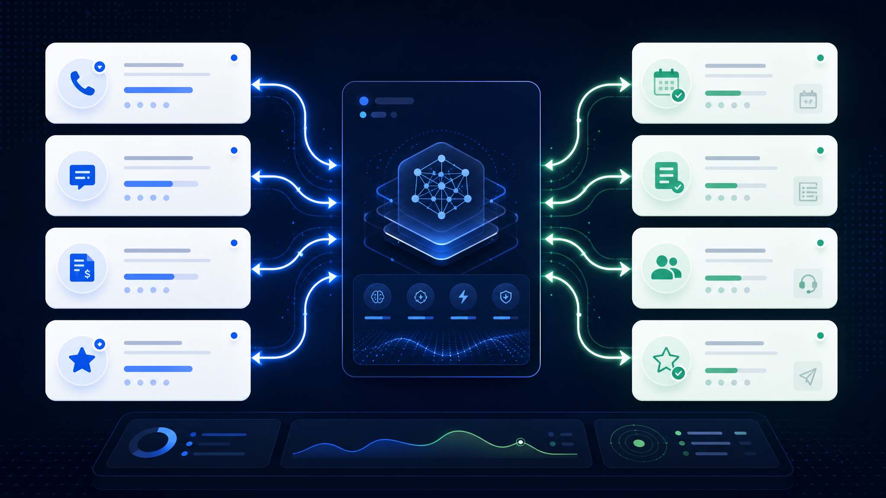
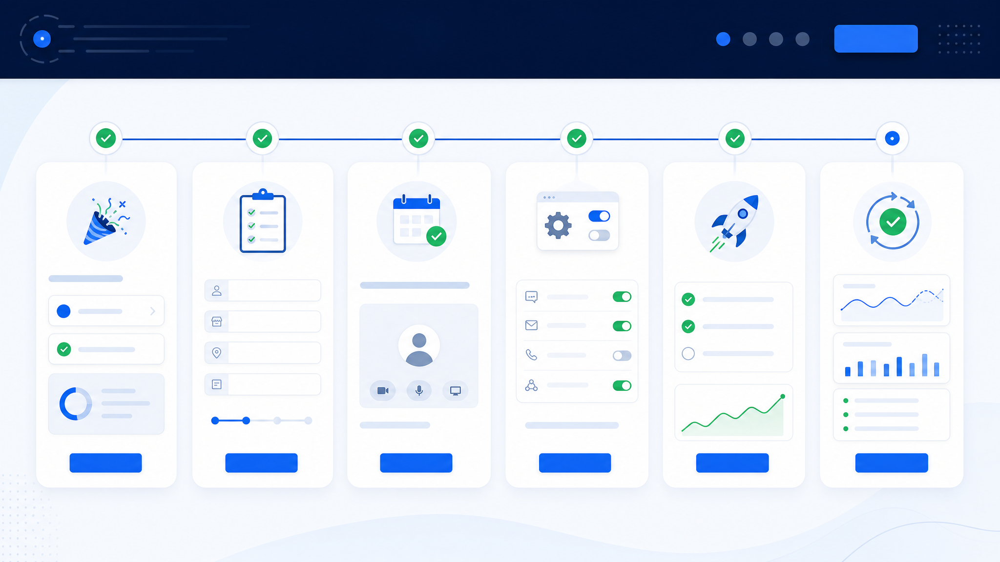

The customer was ready enough to call. If no one answers, the next business may win.
AI Growth Program · Done-for-you setup
Before you buy more leads, stop losing the ones already reaching out.
GrowLocals.ai installs a done-for-you AI response layer for local businesses — so missed calls, website questions, quote requests, booking interest, and review opportunities stop falling through the cracks.
300+ small businesses10+ years local operator experience$1,500 setup waived

The real leak
Most local businesses do not have a lead problem first. They have a response problem.
Calls get missed while staff are with customers. Website visitors bounce when questions go unanswered. Quote requests lose context. Happy customers leave without being asked for reviews.
Interest cools fast. The first helpful response often gets the conversation.
Some buyers do not need a calendar. They need to explain the job and get routed.
Happy customers are proof — but only if the business follows up consistently.
How it works
One response layer. Three AI systems. Four useful outcomes.
GrowLocals is not generic AI hype. It is a practical system installed around how your business actually handles customer intent: calls, chats, reviews, booking, quote requests, and staff handoffs.
BookSimple appointments where appropriate
QuoteCollect details for estimate requests
RouteSend context to the right person
ReviewFollow up with happy customers

What gets installed
Useful AI your team can actually run.
You do not need to become an AI expert. GrowLocals sets up the practical workflows and supports your team after launch.
☎
Voice AI
Answers or captures missed, overflow, busy, and after-hours calls.
Answer common questions
Capture caller details
Book, quote, or route
💬
Conversation AI
Engages website visitors instantly and captures lead information before they leave.
Website chat response
Lead qualification
Staff handoff summary
★
Review AI
Helps request, manage, and respond to reviews so local trust compounds.
Review request workflow
Response support
Local proof growth

14-day setup + optimization
Your trial starts with onboarding, not DIY software access.
The goal by the end of your trial is for the core system to be set up, tested, and optimized around how your business handles customers.

0
Trial starts
Your account is activated and your setup path begins immediately.
1
Intake
We collect services, FAQs, hours, review links, and customer paths.
48h
Setup call
We confirm book, quote, route, review, and escalation rules.
7
Build + test
The AI systems are configured, trained, and tested against your workflow.
14
Optimize
We tune the core setup. If it is not ready, we keep working free until it is.
Founder proof
Built by Loyd Hale, founder of GrowLocals.ai.
Loyd has spent 10+ years owning and operating local businesses, working hands-on with the problems that decide whether local demand becomes revenue: missed calls, slow follow-up, scheduling handoffs, reviews, and reactivation.
Why trust this
Operator-built, not theory-built.
GrowLocals brings proven local-business growth experience into a practical AI Growth Program that helps owners use AI without becoming technical.
300+small businesses using our AI software
$70M+business growth experience
10+ yrsowning and operating local businesses
AwardedClickFunnels recognition and podcast credibility
The offer
Start free for 14 days. Then $297/month.
Start the AI Growth Program with card required. Your $1,500 setup fee is waived, White-Glove Setup is included, and the goal is to have your core system set up, tested, and optimized by the end of the trial.
AI Growth Program
$297/mo after trial
- Free 14-day trial, card required
- Voice AI + Conversation AI + Review AI
- Book, quote, route, or capture leads
- Business intake and knowledge setup
- $1,500 setup fee waived
- White-Glove Setup included
- Real human support included
- Month-to-month after trial
FAQ
Questions before starting.
Does this only work for booking?
No. It can book where appropriate, but it can also collect quote details, capture leads, and route requests to staff.
Will it replace my team?
No. It covers gaps when your team is busy and gives staff better context for follow-up.
Do I need to learn AI?
No. The program is done-for-you. We set up the workflows and support your team.
What happens after signup?
You complete intake, book setup, and we configure the system around your customer paths.
Am I locked into a contract?
No. After the trial, the program is $297/month, month-to-month.
What if setup is not ready?
If the core system is not ready by the end of the trial, we keep working free until it is.
Stop letting ready customers slip through the cracks.
Start your 14-day trial and let GrowLocals install the AI response layer that helps capture more calls, chats, quote requests, bookings, and reviews.
Start Your Free 14-Day Trial →